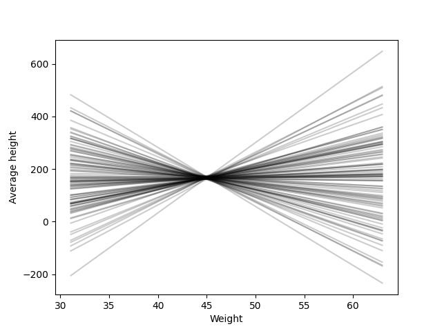
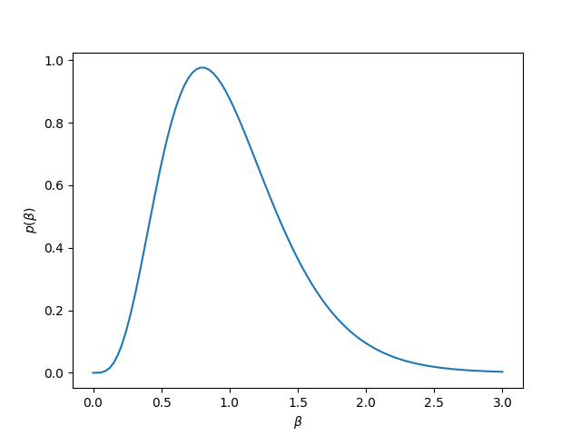
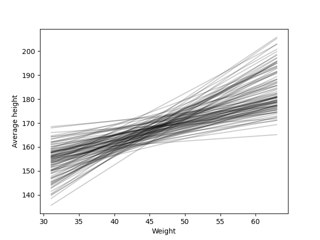
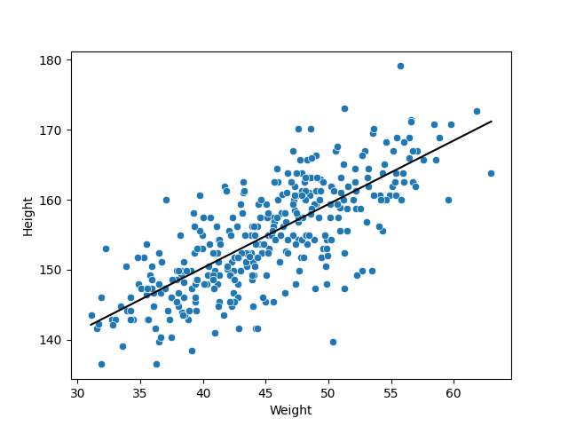
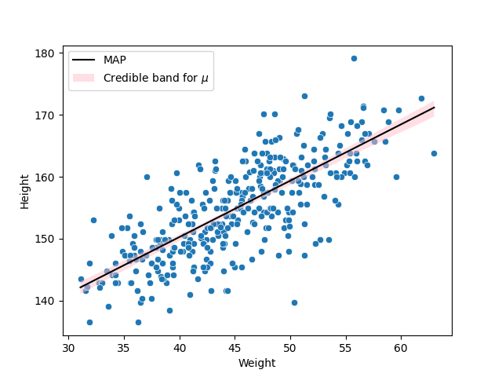
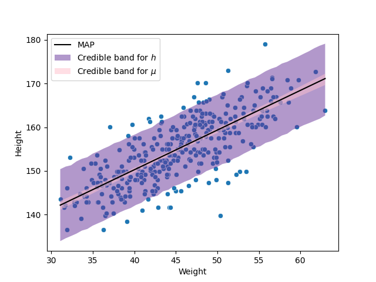

10. Bayesian regression (2)#
For this chapter, I will follow the framework developed by [McE18]. The data used in this chapter are those related with the community !Kung, Howell1.csv available in the repository of the course.
To see all the details check the code 13_HeightWeightAdultsGrid in the repository of the course.
10.1. Specifying the priors and the model#
For now, consider just the adults. Let be \(h_i\) the height of the \(i\)th person, \(w_i\) their weight and \(\bar{w}\) the average adults’ weight. Consider the following model:
Note that when \(w_i=\bar{w}\), \(\mu_i=\alpha\). That is, when the weight of an equals the adults’ average weight, the expected height is \(\alpha\). Thus, it makes sense to model \(\alpha\sim\textsf{Normal}(170,3^2)\). This is because, for a normal distribution we know that 95% of its probability is between the mean and 2 times its standard deviation, so we are saying in this case that the average height is between 164 cm and 176 cm. For the prior of \(\sigma\) we proceed similarly, when \(w_i=\bar{w}\), 99% of the heights are between \(\alpha-3\sigma\) and \(\alpha+3\sigma\). Considering that the execpected value of \(\alpha\) is equal to 170, that means that 99% of the heights are (approx.) around \(170-3\sigma\) and \(170+3\sigma\). Then considering \(\sigma \sim \textsf{Uniform}(0,10)\) means that at a extreme case we consider the height, for an adult with the average weight, to be between 140 cm and 200 cm. But, why are we using such prior for \(\beta\)?
One way to check how these prior distributions is to simulate values of \(\alpha\) and \(\beta\), \(\tilde\alpha_1,\ldots,\tilde\alpha_S,\tilde\beta_1,\ldots,\tilde\beta_S\) and then plot \(\tilde\alpha_s+\tilde\beta_s(w-\bar{w})\), \(s=1,\ldots,S\).
Evidently, this is a terrible prior for \(\beta\).
To establish a good prior for \(\beta\), let’s first interpret what information is therein. First, note that the height and the weight have (to some point) a positive correlation, so \(\beta\) should follow a postive distribution. Second, note that \(\beta\) is the rate of height and weight, that is, it codes how much the height is increased (in cm) when the weight increases as well (in kg). Now, there exists this rule of the thumb that says that the weight of a person is around its height in centimeters minus 100. This means that for someone with a height of 170 cm their weigth is around 70 kg, and someone with a height of 171 cm their weight is around 71 kg. So, for every cm that the height increases, the weight increases 1 kg. Thus, \(\beta\) should not only be positive, but should be around 1.
Therefore, we could take, for example, a gamma distribution for \(\beta\) and set its mean or mode to 1. If we set the mean of the distribution to be 1, this implies that both parameters are equal, and then we set by trial and error an appropriate value value for the parameters. The next figure shows the case when we model \(\beta\sim\textsf{Gamma}(5,5)\).
Meanwhile, the next figure shows possible regression functions with this priors. We can observe more realistic relations between the height and the weight.
Of course, we could be even more stricts with our priors, trying to capture a more realistic relation between the variables, but for prior distributions this is good enough. Remember also that we might have trouble for taking strict narrow priors. It is the job of the posterior to use data to fit a more realistic relation between the variables.
10.2. The best fit regression function#
Once established the model, we can create a grid of values for \(\alpha\), \(\beta\) and \(\sigma\). And, as before, simulate a sample from the posterior, with this sample, we can take the MAP of each parameter and plot the most plausible regression function \(\hat{\alpha}+\hat{\beta}(w-\bar{w})\).
10.3. Credible band for the regression function#
Because \(\mu\) depends on the parameters, and those have a posterior distribution, then \(\mu\) has a posterior distribution as well. In particular, fixing a weight \(w\), and taking the posterior sample \(\tilde\alpha_1,\ldots,\tilde\alpha_S,\tilde\beta_1,\ldots,\tilde\beta_S\), we get a posterior sasmple \(\tilde\mu_1,\ldots,\tilde\mu_S\) using the relation
From this sample, we can create credible intervals for \(\mu\) given the fixed value of \(w\). Varying \(w\) from its lowest value to its largest, we create a credible band for the regression function.
10.4. Credible band for the observations#
Finally, to generate credible intervals for the height, remember that \(h|\mu,\sigma^2\sim\textsf{Normal}(\mu,\sigma^2)\). Then, for a fixed weight \(w\), we can get a posterior sample for \(\mu\) as we explain before, \(\tilde\mu_1,\ldots,\tilde\mu_S\). More over, we can simulate a sample from the posterior of \(\sigma\), \(\tilde\sigma_1,\ldots,\tilde\sigma_S\). Thus, to get a sample from the posterior of \(h\), \(\tilde{h}_1,\ldots,\tilde{h}_S\), we simulate \(\tilde{h}_s\sim\textsf{Normal}(\tilde\mu_s,\tilde\sigma_s^2)\). From the sample \(\tilde{h}_1,\ldots,\tilde{h}_S\) we can get a credible interval for the fixed weight \(w\). Varying \(w\) from its lowest value to its largest, we get a credible band for the height.
